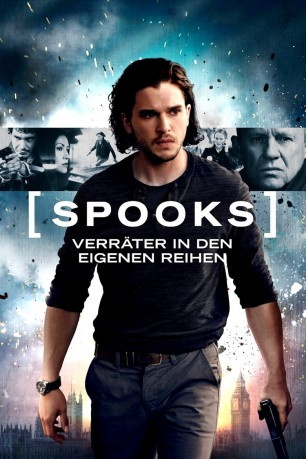

gesehen am 05.10.2015
gesehen am 05.10.2015Alternativ: MI-5 (Englischer Titel) gesehen am 05.10.2015
 
 IMDB-Wertung: 6.2 / 10
IMDB-Wertung: 6.2 / 10  Metascore:
Metascore: 
Harry Pearce (Peter Firth), der Leiter einer britischen Anti-Terror-Einheit des MI5, überwacht den Gefangenen-Transport des berüchtigten Terroristen Adam Qasim (Elyes Gabel). Als der Wagen mitten in London angegriffen wird, gelingt Quasim jedoch die Flucht und Pearce wird für das Debekal zur Rechenschaft gezogen. Niemand ist überrascht als der in Ungnade gefallene und zum Rücktritt gezwungene Pearce daraufhin mit einem Sprung in Themse spurlos verschwindet. Um sich über Harrys Schicksal Klarheit zu verschaffen, rekrutiert der britische Geheimdienst den ehemaligen Agenten Will Holloway (Kit Harington), den eine gemeinsame Vergangenheit mit Harry verbindet. Bald stellt sich heraus, dass Harry noch am Leben ist und eigene Ziele verfolgt, für die er jedoch Wills Hilfe benötigt. Während Qasim sich auf einen Terror-Angriff mitten in London vorbereitet, muss sich Will für eine Seite entscheiden.
Jahr: 2015
Dauer: 104 Minuten
FSK:
Land: England Studio: Square One EntertainmentTonspuren: DD5.1 - ,
Untertitel:
Auflösung: 1080p (1920x808) Größe: 8120 MB
Genre: Action, Drama, Thriller
Regisseur: Bharat Nalluri
Drehbuch: Jonathan Brackley, Sam Vincent, David Wolstencroft
Soundtrack: Dominic Lewis
Darsteller:
 Michael Wildman als Robert Vass
Michael Wildman als Robert Vass Tuppence Middleton als June Keaton
Tuppence Middleton als June Keaton Peter Firth als Harry Pearce
Peter Firth als Harry Pearce Elliot Levey als Philip Emerson
Elliot Levey als Philip Emerson Elyes Gabel als Adem Qasim
Elyes Gabel als Adem Qasim David Harewood als Francis Warrender
David Harewood als Francis Warrender Jennifer Ehle als Geraldine Maltby
Jennifer Ehle als Geraldine Maltby Tim McInnerny als Oliver Mace
Tim McInnerny als Oliver Mace Ronan Summers als Ed Lansbury
Ronan Summers als Ed Lansbury Amra Mallassi als Hamza Ahmadi
Amra Mallassi als Hamza Ahmadi Lara Pulver als Erin Watts
Lara Pulver als Erin Watts Kit Harington als Will Holloway
Kit Harington als Will Holloway Eleanor Matsuura als Hannah Santo
Eleanor Matsuura als Hannah Santo Elizabeth Conboy als Airport Security Woman
Elizabeth Conboy als Airport Security Woman Shane Zaza als Sniper
Shane Zaza als Sniper Max Cavenham als MI5 Agent
Max Cavenham als MI5 Agent Lee Asquith-Coe als Russian Henchmen , uncredited
Lee Asquith-Coe als Russian Henchmen , uncredited Lasco Atkins als Russian Pimp , uncredited
Lasco Atkins als Russian Pimp , uncredited Graham Curry als MI5 Surveillance Analyst , uncredited
Graham Curry als MI5 Surveillance Analyst , uncredited Shina Shihoko Nagai als MI5 Agent , uncredited
Shina Shihoko Nagai als MI5 Agent , uncredited Matthew Walker als Prison Van Officer
Matthew Walker als Prison Van OfficerDatei: X:\2015(N-Z)\Spooks - Verräter in den eigenen Reihen (2015, FSK, 1920x808).mkv seit 30.09.2015
Festplatte: HD 2015(A-Z)
 Es gibt insgesamt 161 Filme in der Gruppe '2015(N-Z)'
Es gibt insgesamt 161 Filme in der Gruppe '2015(N-Z)'